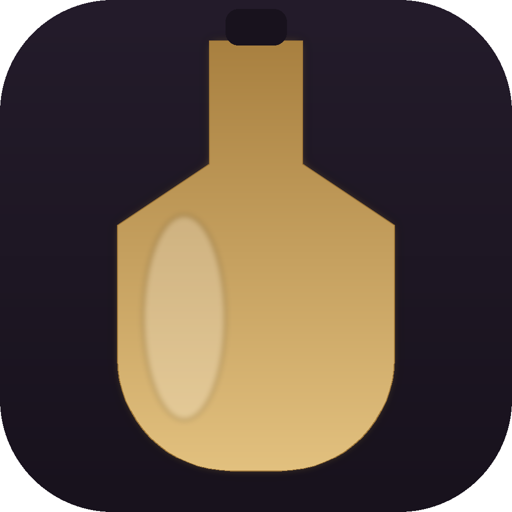
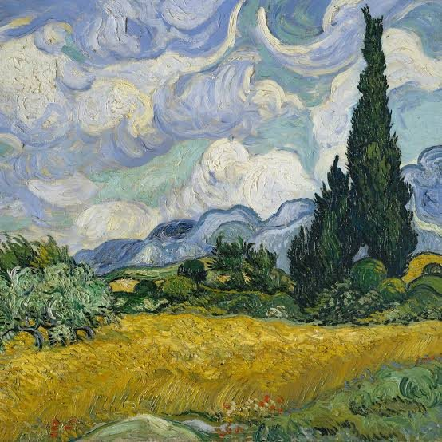
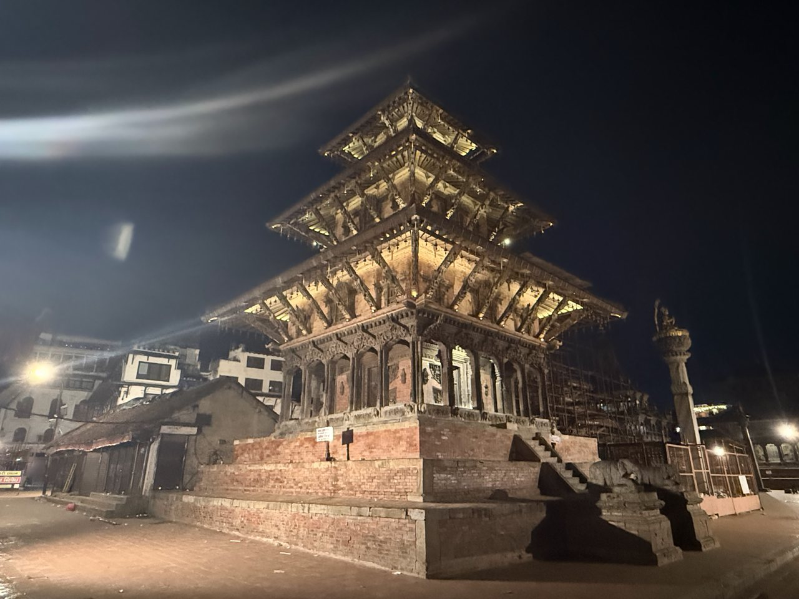
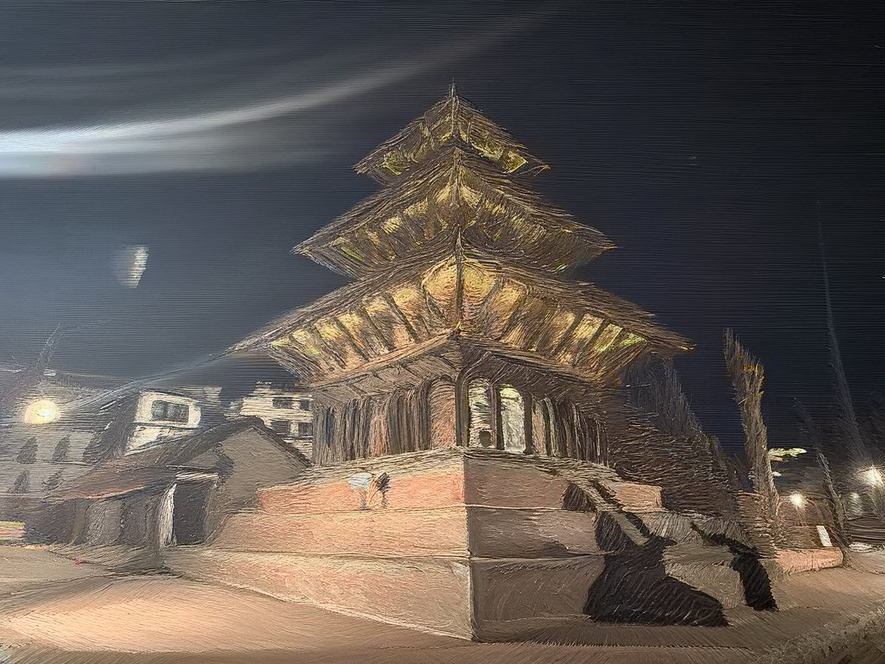
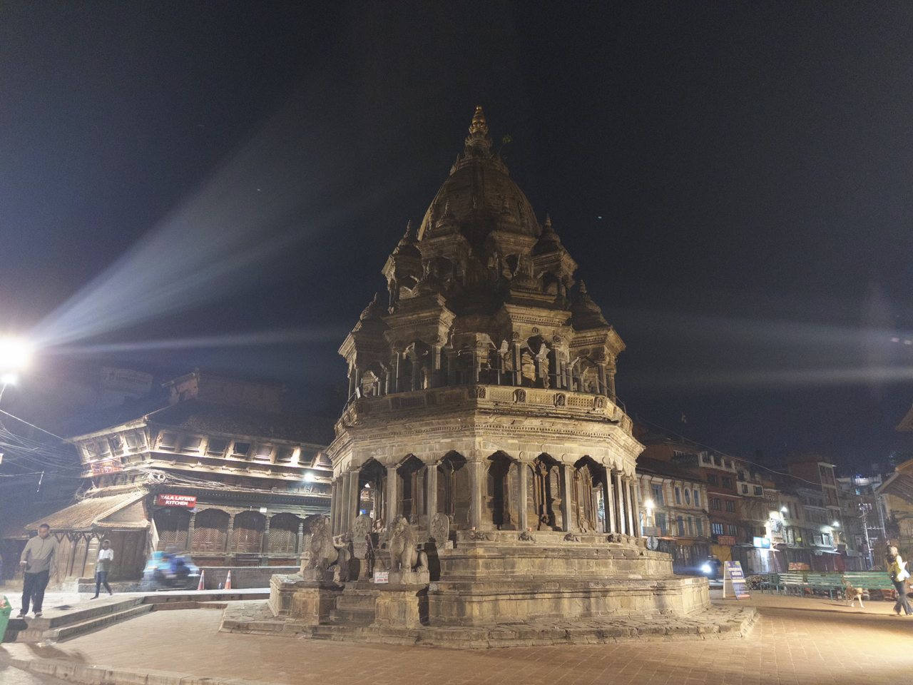
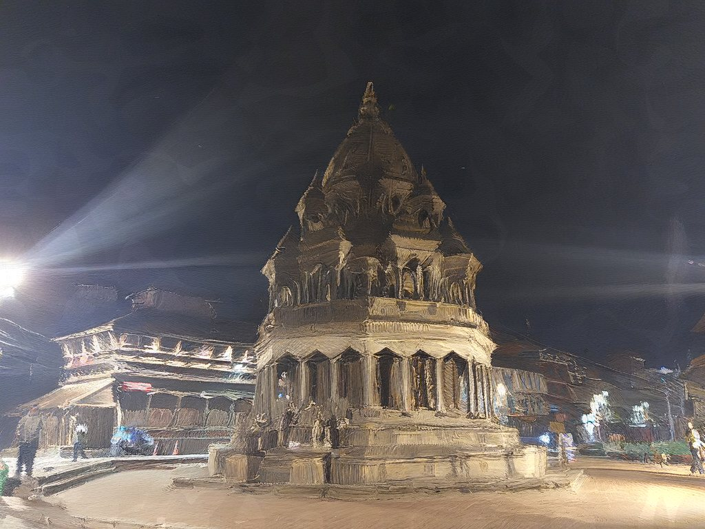
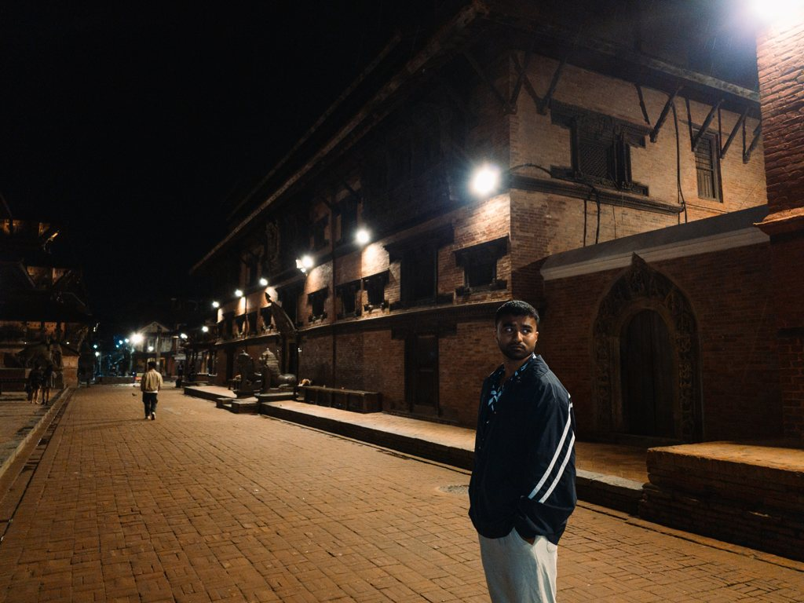
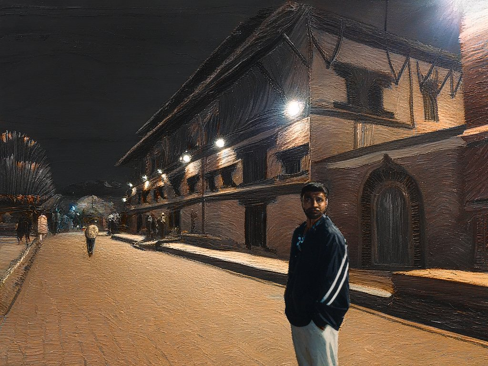
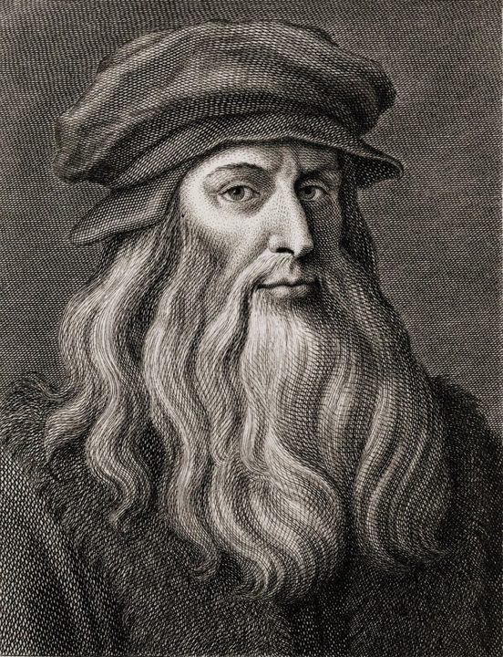
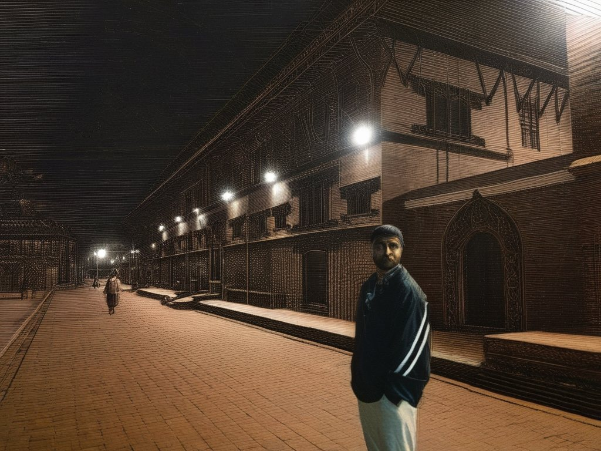

RasaDrop in any reference image and Rasa distills its look into an Essence: brushwork, palette, texture. Drag that Essence onto your own photo and watch it transform, while the scene keeps its shape. Everything runs on your own GPU.
Free · Windows 10/11 · NVIDIA GPU · nothing leaves your machine
No prompts, no sliders full of jargon. Three moves.
Drop a painting, print or texture into the Distillation Room. Rasa extracts its style into a reusable Essence bottle.
Pick a photo and drag the bottle onto it. Live progress shows each step; a restyle takes about 15 seconds on a laptop GPU.
Every creation lands in your Media page, ready to save, compare, or turn into a relit animation.
Night shots taken on a phone. Each row: the style reference, the original photo, and what Rasa made of it. No retouching.





One photo, two Essences




A desktop app with a local Python engine. Your photos never leave your computer.